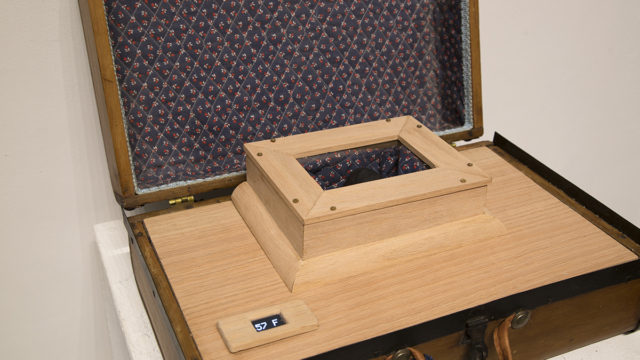
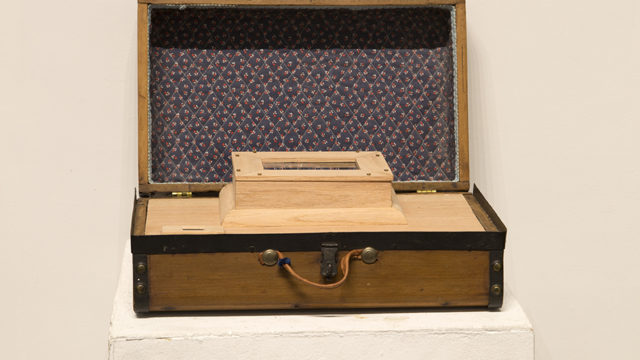

A moon meteorite was purchased online, ground up, and added to a milk culture;
which was then used to make a homestead-style hard cheese. This cheese was coated in wax and placed inside a
temperature controlled environment within a suitcase that belonged to my grandfather.
This sculpture contains: Kingfisher Dairy Raw Cows Milk, Moon Meteorite 5406-recovered in Western Sahara, Africa, Rennet, Wax,
Suitcase (Lee Horwitz), Wood, Glass, Arduino Micro-controller, Thermometer, OLED, Peltier, Fan, Wires

